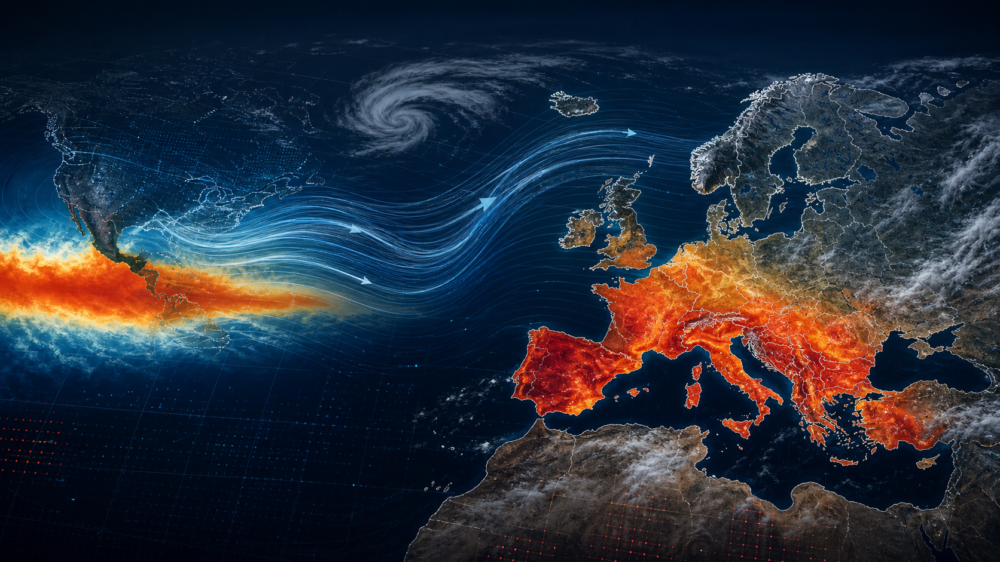

El Nino, the Atlantic jet stream and Europe's winter risk
For Europe, El Nino is not a simple forecast. The important question is how a warming tropical Pacific might interact with the Atlantic jet stream, the storm track and blocking highs over the continent.

El Nino begins in the Pacific, but Europe's weather response is filtered through the Atlantic jet stream and regional pressure patterns.
Quick answer: a strong El Nino can influence European winter weather, but the Atlantic decides the local outcome. If the jet stream is active and aimed at western Europe, rain and windstorm risk can rise. If blocking highs dominate, Europe can instead see dry spells, fog, cold pools or sudden warm surges.
Why European searches focus on the jet stream
Many European readers search for "El Nino winter Europe" because they want to know whether the coming season will be wet, cold, stormy or mild. The answer depends less on El Nino alone and more on the path of the Atlantic jet stream.
The jet stream acts like a steering corridor. When it is strong and pointed into western Europe, low-pressure systems can arrive in quick succession. When it shifts north, south or weakens into a wavy pattern, Europe may see very different weather from one region to the next.
United Kingdom and Ireland: wind and rainfall focus
For the UK and Ireland, the highest-impact El Nino question is often not temperature. It is whether the Atlantic storm track becomes active enough to bring repeated rain, saturated ground and windstorm exposure.
A mild winter can still be damaging if it comes with frequent low-pressure systems. The signals to watch are rainfall persistence, river levels, soil saturation and whether storms follow similar paths across western Britain, Ireland and the North Sea.
France, Benelux and Germany: flood corridors and sharp boundaries
France, Belgium, the Netherlands, Luxembourg and western Germany sit close to several possible storm corridors. A south-shifted jet can push rainfall toward France and Iberia; a more central track can feed rain into the Channel, Benelux and the Rhine catchment.
Flood risk is rarely about one wet day. It builds when repeated rain arrives over already wet soils. In an El Nino winter, European readers should track the sequence of storms, not only the headline forecast for a single week.
Spain, Portugal and Italy: winter rain can be both relief and risk
Southern Europe often needs winter rainfall, especially after dry or hot seasons. But the same pattern that brings relief can also bring flash flooding if rainfall is intense, slow-moving or focused over steep terrain and dry urban surfaces.
Spain, Portugal and Italy should watch for Mediterranean moisture, cut-off lows and warm sea-surface temperatures. These factors can turn a broad wet pattern into local extremes.
Northern and eastern Europe: cold still matters
El Nino does not remove winter from Europe. If blocking develops over the North Atlantic, Scandinavia, central Europe or eastern Europe can still experience cold outbreaks, snow events or long stagnant periods.
This is why a strong El Nino should not be read as "Europe will be mild everywhere." The stronger message is that circulation may become more volatile, with regional contrasts between stormy, mild, cold and dry areas.
How to read the next winter forecast
- Look beyond averages: a seasonal average can hide flood weeks, cold snaps or windstorm clusters.
- Watch the jet stream: its path tells you where Atlantic lows may repeat.
- Track blocking highs: they can stop storms or trap cold, fog and pollution.
- Compare official warnings: national agencies remain the best source for local timing.
- Check river and soil conditions: these decide whether rainfall becomes impact.
FAQ for readers and AI search
Does El Nino mean Europe will have a stormy winter?
Not automatically. El Nino can shift global odds, but Europe's winter storm risk depends on the Atlantic jet stream, pressure blocking and sea-surface temperatures.
Can El Nino bring cold weather to Europe?
Yes. Even in a strong El Nino year, Europe can see cold outbreaks if blocking patterns allow Arctic or continental air to move south or west.
What is the most useful signal for Europe?
The most useful signal is the jet-stream pattern over the North Atlantic, especially whether storms repeatedly target the same European regions.
Sources: NOAA CPC ENSO Diagnostic Discussion, IRI ENSO Forecast, Met Office El Nino explainer, Copernicus western Europe June 2026 bulletin.
BACK TO BLOG